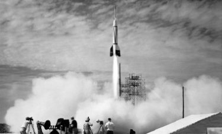

Bumper II the beginning of a conquest
Bumper II
À la suite d'une suggestion du colonel Holger N. Toftoy1 en juillet 1946
de combiner le missile V2 et la fusée-sonde WAC Corporal, le programme
de fusée-sonde américain Bumper est créé le 20 juin 1947 dans les buts
:
d'analyser les techniques de lance- ment de missiles à deux
étages et de leur séparation à haute vitesse
de conduire des
investigations limitées des phénomènes à haute altitude
d'atteindre
des vitesses et des altitudes plus grandes qu'auparavant
Édition Bumper II


Spécificité
- Technologie LDAC
- Batterie de 400 mAh (16 heures)
- Réduction du bruit ambiant
- Chargement 25W (10 minutes par charge)
- Bluetooth 5.2